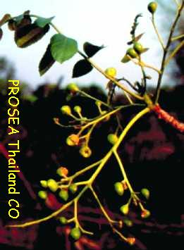
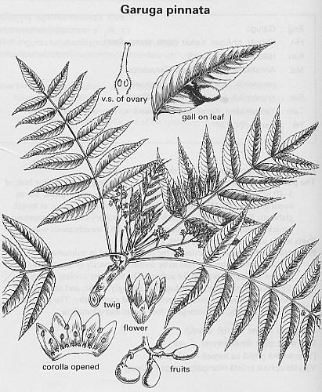

|
ECONOMICALLY
IMPORTANT PLANTS OF INDIA |
| Under-utilized Food and Fodder species and their wild relatives | Contributed by Ms.M.L Annapurna And Dr. Dhanapal, UAS, Bangalore |
Garuga Pinnata
-----
Taxonomic Details

----- Correct Name
----- Classification
----- Synonyms
----- Common Names
Other Biological Details
----- Habit and Habitat
----- Diagnostic Features
----- Reproductive Biology
---------- Breeding System
---------- Phenology
---------- Pollinators
---------- Seed Biology
----------Seed Germination
------ Cultivation
----- Major Pests and Diseases
Economic Potential and Uses
----- Parts Used
----- Uses
----- Harvesting Practices
----- Produce and Products
----- Chemistry
----- Processing Techniques
----- Other uses
----- Economic Potential to the
Country
----- Export Potential
Miscellaneous Information
Literature
Correct
Name : Garuga
Pinnata

Family : Burseraceae
Synonyms :
Common
Names :
Hindi: Garuga-Ghogar.
HABIT
& HABITAT:
Distributed in
Availability :
Status :
Pollinators:
Seed Biology :
Seed Germination:
MAJOR
PESTS & DISEASES
Pests:
Diseases:
·
The fruits are
eaten raw or pickled , but are strongly acid; the fruit is considered a
semi-medicinal article of diet.
Harvesting Practices
1. Used for general construction, inferior buildings, chiefly for planking , for making dugout canoes, teaboxes and drums. Being liable to insect attacks it does not possess good reputation. It may also be tried for boards.
2. The bark and especially the red leaves and their red galls are used for tanning.
3. The wood is also used as a fuel.
.jpg){kind=link}